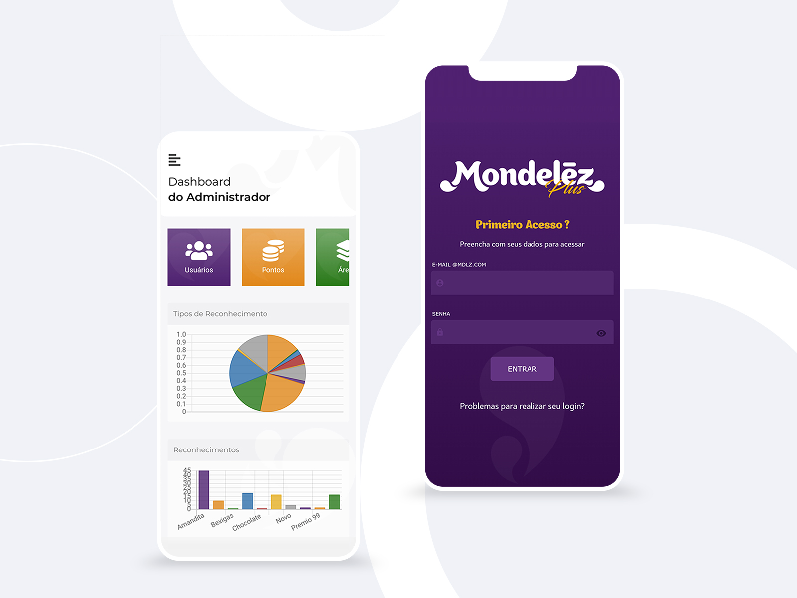
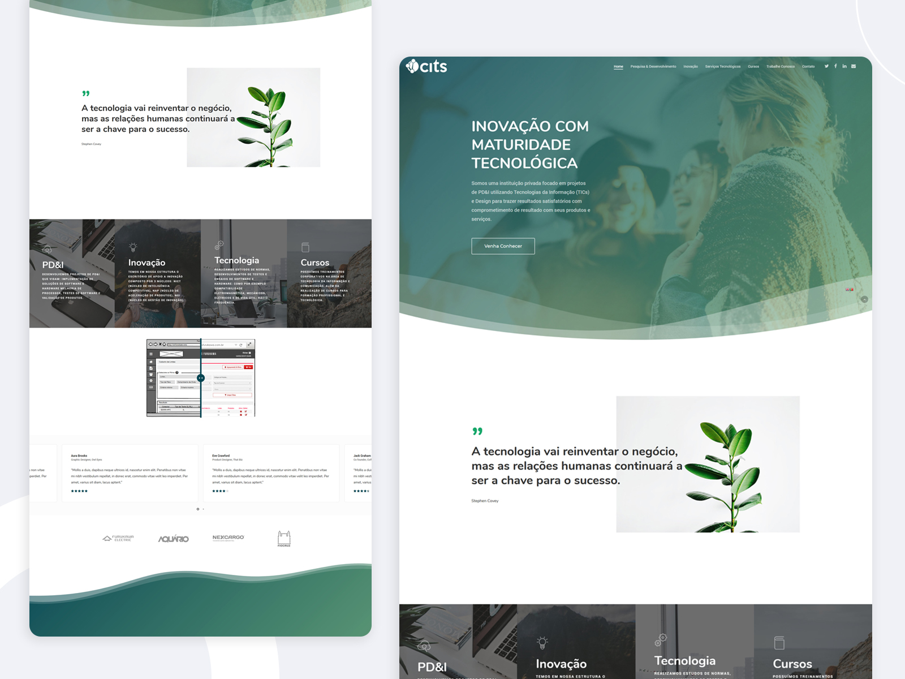
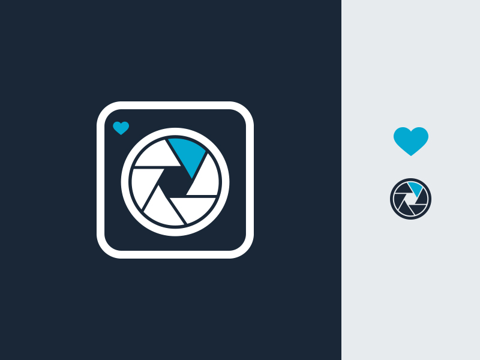

Hello! I'm Eloise Monteiro, a UI Designer, Graphic Designer, Mobile Designer and passionate for
Games from Brazil based in Lisboa/PT
working in Tech crafting accessible interactions & experiences for users.


Manufactory'
System
Furukawa Electric
The Product
The mobile app allows managers to create test parameters and regularly check that tests are being
performed to the quality standard required by Furukawa Electric.
The Problem
Old system was developed in an outdated language. There was no usability or user experience study and it was
not responsible, thus working only on a given screen size.
The Project
Final quality control management system for testing products manufactured by Furukawa Electric.
Automation
System
Industry Connect
The Product
Internal software for automation of Furukawa Electric's manufacturing processes.
The Problem
The company used different software depending on each country to obtain the same equipment configurations in its factories.
The Project
Bring the experience of users from all countries that use this software and unite them in a single model working with translation tags worldwide.


App
iOS/Android
Mondelēz International
The Product
An application for the standard user to exchange their points for products and dashboard mode for admin users to track users' tasks.
The Problem
The company needed to bring commitment from its collaborators to achieve internal standards.
The Project
Build an application in which managers can manage employee processes, score tasks, extract reports and build an online store. In return, employees may exchange their points for products.
Dashboard
Nissin Foods
The Product
Points management system based on your learning evolution within the company.
The Problem
The company sought a greater sense of belonging from its employees in order to better absorb lectures, e-learning and new internal changes.
The Project
Develop a points system based on an internal studies on what their needs are, introducing an exchange of products for punctuation over the months thus bringing more access and consumption of their internal content.


Institucional
Website
GaiaNet
The Product
Institutional site.
The Problem
Company needed a new institutional website with a content management system (CMS) for internal maintenance.
The Project
Development of a new institutional website according to the internal request of the graphic team respecting the brand identity, highlighting the company's portfolio in Wordpress with CMS.
Institucional
Website
CITS
The Product
Institutional site.
The Problem
Outdated design. CITS - Centro Internacional de Tecnologia de Software
The Project
Bring a more updated design idea respecting the brand identity.

